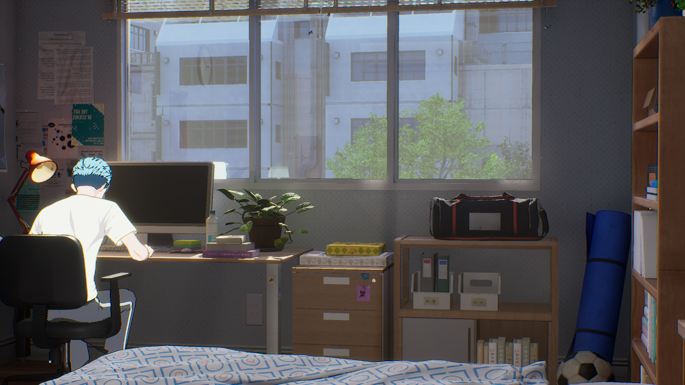
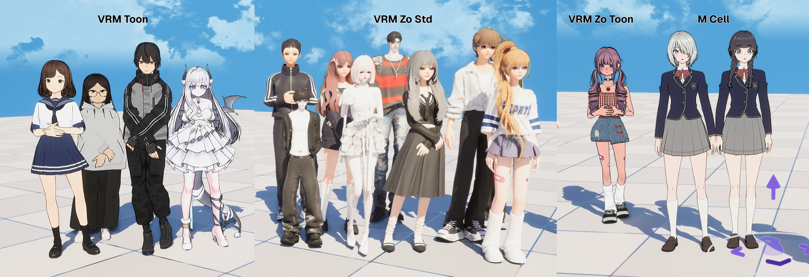
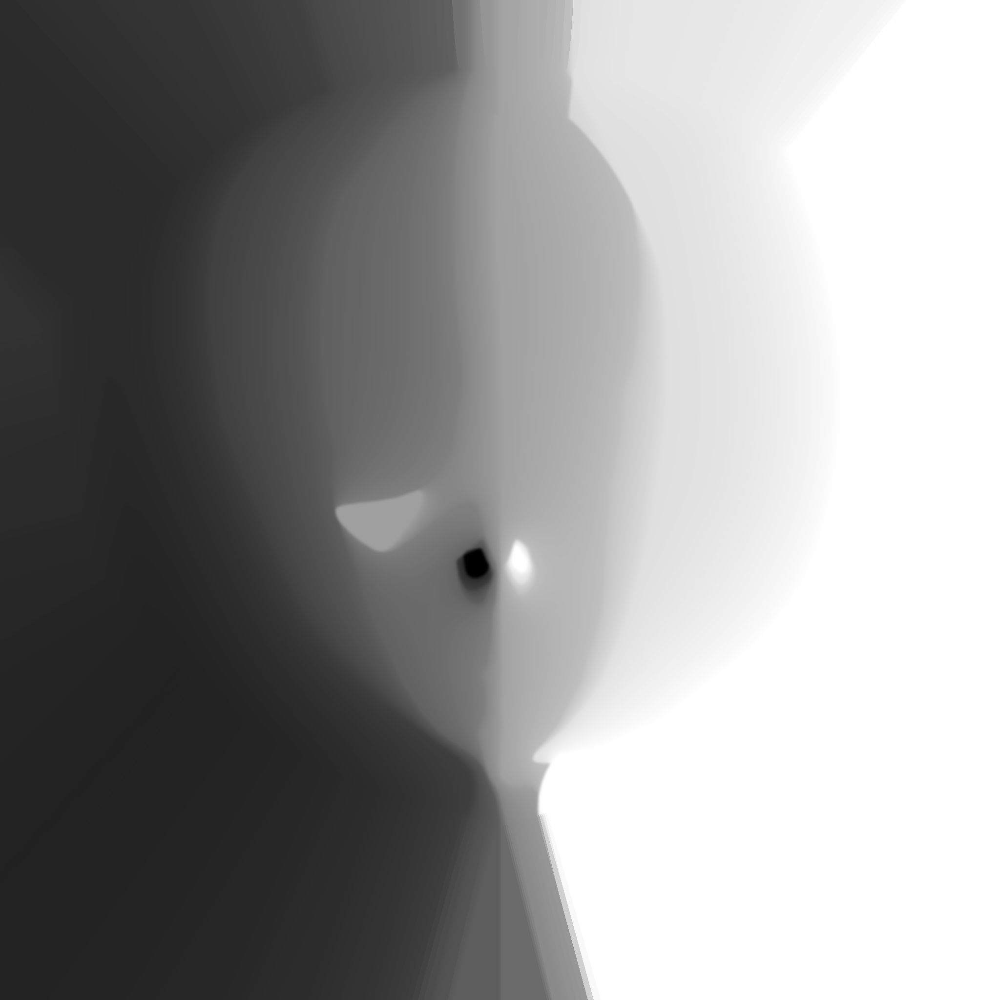
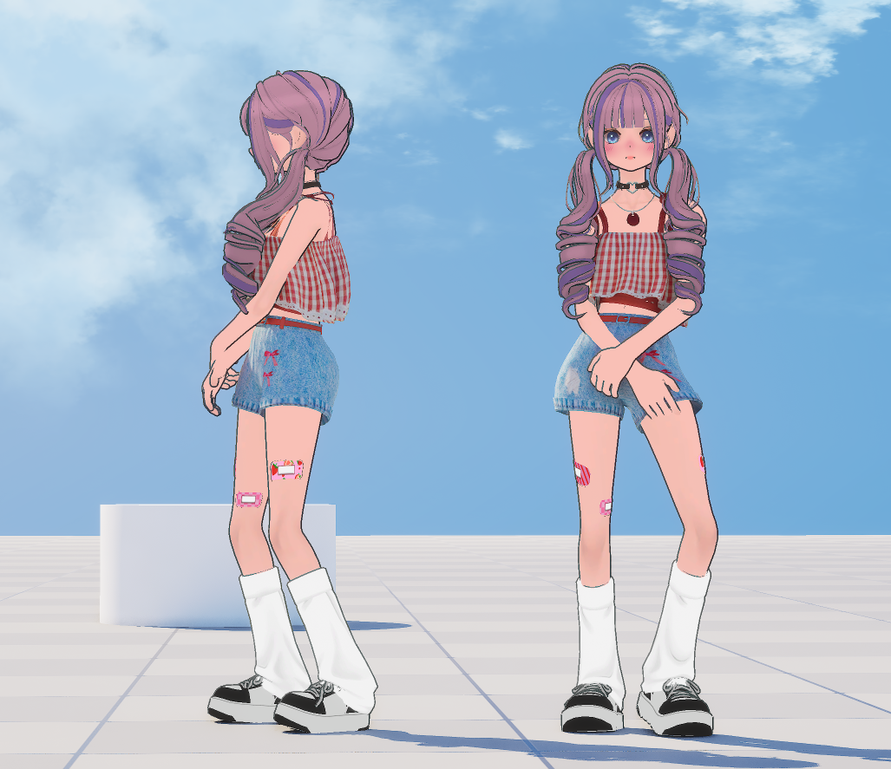
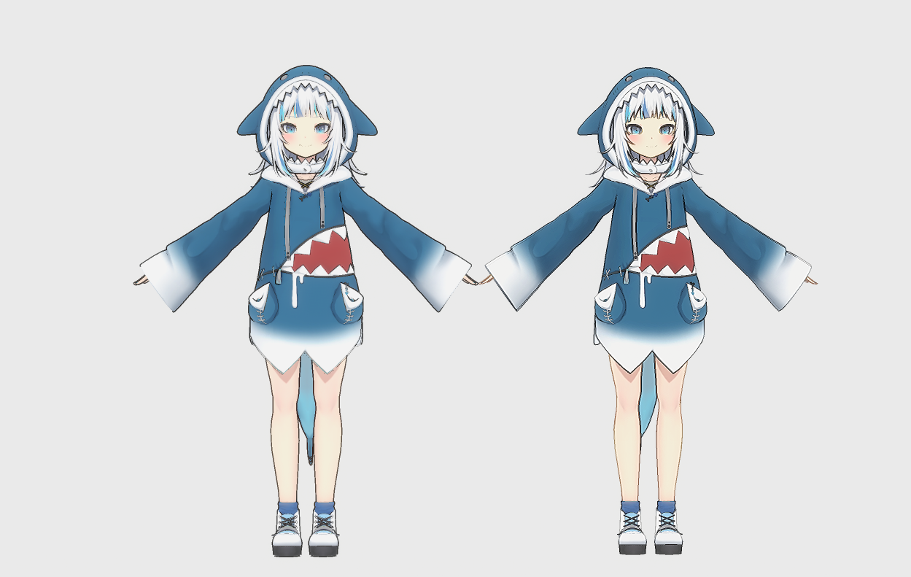
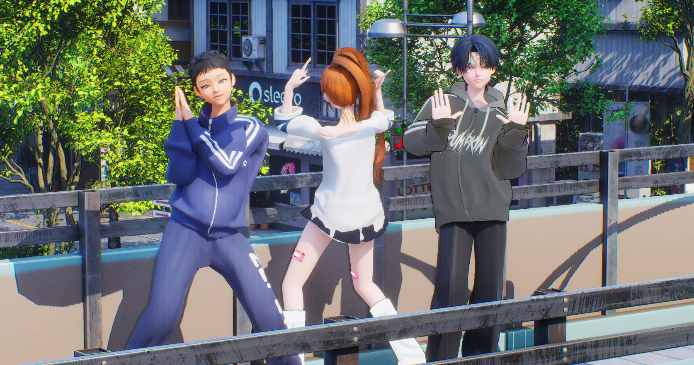
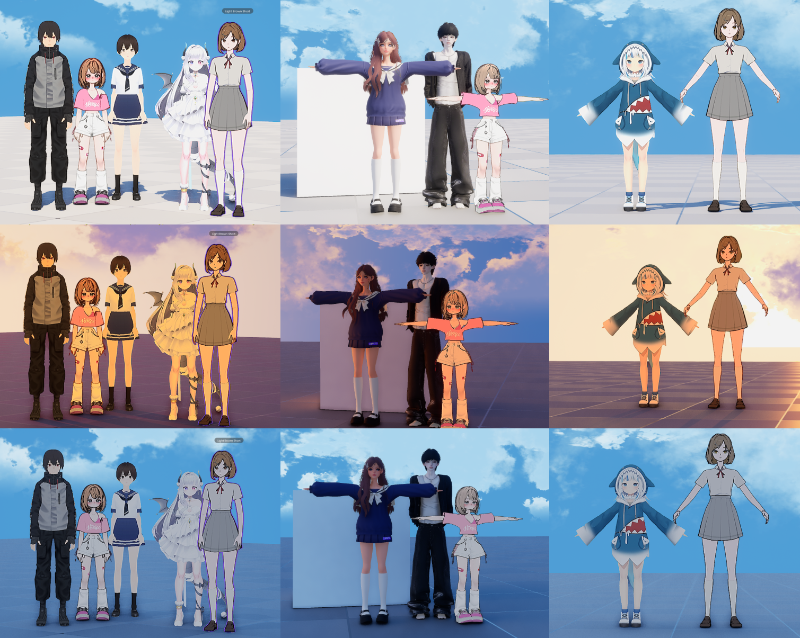

NPR Shader System
MetaHuman to anime conversion. NPR characters rendered separately over PBR backgrounds, with 4 material looks covering both in-house and VRM characters
Problem
Early in the project, a decision was made to switch from MetaHuman-based realistic rendering to an anime style. Characters needed to be rendered in NPR while keeping PBR backgrounds, and the in-house characters and external VRM models had different material structures, making it impossible to achieve a consistent look with a single approach.
Solution
Built a Cel Shading-based NPR prototype, then led system expansion and maintenance.
Split the approach into Custom Depth + Post Process for in-house and Emissive + Inverted Hull for VRM, creating 4 NPR looks. The core nodes carried over from the prototype are SDF face shadow and Dot Product-based two-tone shading.
Result
| Category | Result |
|---|---|
| Rendering Transition | Full transition from MetaHuman to anime style |
| NPR Looks | 4 looks — art team can change styles by swapping Toon Ramps |
| Material Scale | 698 MIs, 1,371 textures |
| Material Separation | In-house (dedicated toon) + VRM (MToon reimplementation) built separately |
| Background Coexistence | PBR backgrounds + NPR characters in the same scene |
| Look Dev | Finalized per-character looks with art team — style changes possible via Toon Ramp swap |

4 Base Materials
In-house and VRM have different material structures, and even within VRM, realistic and non-realistic parts are mixed. So four separate base materials were created.

1. In-house Toon
Dedicated toon material for in-house characters. On top of a structure that separates characters via Custom Depth buffer and renders them in NPR style through Post Process, I developed and maintained features such as SDF face shadow and Matcap reflection.
Global Shadow OFF / ON toggle demo
SDF Face Shadow
Standard NdotL produces unintuitive shadows around the nose and eye sockets. By controlling shadow boundaries with pre-baked distance information in SDF textures, face shadows fall naturally even as the lighting angle changes.
SDF face shadow lighting demo

SDF Shadow Mask texture
Matcap Reflection
PBR reflections don't suit NPR environments. I used Matcap textures for view-based reflections on hair highlights, skin sheen, etc. Turned out it could fake rim lighting too, so I built Matcap Painter to make those textures faster.
Matcap reflection demo
2. VRM Toon
Restructured parameter input names based on the in-house toon material to conform to MToon conventions. Ensured MToon textures and flags are automatically connected upon VRM import. Outline uses the same Post Process approach as the in-house material.
3. VRM Zo Toon
The existing in-house material grabbed color from the Custom Depth buffer, making realistic/non-realistic mixing impossible. To solve this, I created a new toon shading system that operates in the Emissive channel. Outline uses the Inverted Hull method. Matching the tone with existing in-house characters was critical.
| Material | Base Pass | Samplers |
|---|---|---|
| In-house Toon | 433 inst | 7 / 16 |
| VRM Toon | 369 inst | 4 / 16 |
| Zo Toon | 226 inst | 3 / 16 |
Enabled realistic/non-realistic mixing while reducing shader cost by 48% (vs in-house)
Zo Toon + PBR non-realistic/realistic combination showcase

PBR realistic part + Toon non-realistic part mixed result

Zo Toon(Inverted Hull) vs VRM Toon(Post Process) outline comparison
4. VRM PBR
Lightweight version of the VRM4U plugin's PBR material. Renders realistic parts such as skin, irises, and accessories based on a default SSS Profile. Like Zo Toon, the focus was on matching the tone with existing in-house characters.

Technical Details
NdotL (Normal dot Light)
Inverted Hull Outline
UDS / ToD 통합 테스트
A 9-frame grid verifying that all shaders behave consistently across various lighting and Time of Day conditions.
